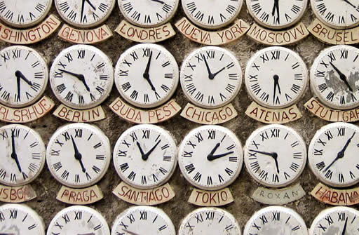

Время суток. На уроке вы сможете говорить о времени в часах и минутах,
научитесь задавать вопрос: “Который час?”. И отвечать на него. Что,
кстати, отличный способ завязать знакомство.
Да
evet
ВРЕМЯ В ТУРЦИИ vs ДРУГИЕ СТРАНЫ

ALMANYA: 1 saat geri
ARJANTİN: 5 saat geri
AZERBAYCAN: 2 buçuk saat ileri
BULGARİSTAN: Saat farkı yok.
ÇİN: 6 saat ileri
FAS: 2 saat geri
GÜNEY KORE: 7 saat ileri
İNGİLTERE: 2 saat geri
İRAN: 1 buçuk saat ileri
JAPONYA: 7 saat ileri
KENYA: 1 saat ileri
PERU: 7 saat geri
SURİYE: Saat farkı yok.
URUGUAY: 5 saat geri
ALASKA: 11 saat geri
Задание 3. Выше приведены списки других стран и указана
разница во времени с Турцией. Давайте посмотрим на список и ответим на вопросы
-Saat 10.30’da İngilitere’de saat kaç?
-Saat
.30.
-Saat 12.00’da Uruguay’da saat kaç?
-Saat
.00
-Saat 08.15’te Çin’de saat kaç?
-Saat
.15.
Saat 14.10’da İran’da saat kaç?
-Saat 15.
.
-Saat 21.40’ta Almanya’da saat kaç?
-Saat
.40.
Задание 4. В настоящее время в Турции время 18:20. Давайте посмотрим на
список выше и отметим верно (Doğru) или неверно (Yanlış) указано текущее
время ниже